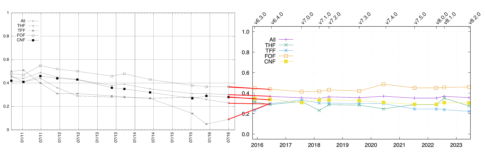

Looking Back

- All problems that were unchanged in the range, and
ratings had not been stuck at 0.00 or 1.00
- Lefthand from TPTP v5.0.0 to v6.4.0
Sutcliffe, G.: The TPTP Problem Library and Associated Infrastructure. From CNF to TH0,
TPTP v6.4.0. Journal of Automated Reasoning 59(4), 483–502 (2017)
- Righthand (this work) from TPTP v6.3.0 to v8.2.0
- Changes in data cleaning increased average ratings
- v5.0.0 to v6.4.0 plots have a clear downward trend
v6.3.0 to v8.2.0 plots do not